Продолжаем разбираться с основами алгебры. Сегодня мы поработаем с распределительным законом умножения, а именно рассмотрим такое действие как вынесение общего множителя за скобки.
Содержание урока- Основной принцип
- Как происходит вынесение общего множителя за скобки
- Вынесение минуса за скобки
- Вынесение общего множителя за скобки в буквенном выражении
- Задания для самостоятельного решения
Основной принцип
Распределительный закон умножения позволяет умножить число на сумму (или сумму на число). Например, чтобы найти значение выражения 3 × (4 + 5) можно умножить число 3 на каждое слагаемое в скобках и сложить полученные результаты:
\[3 \times (4 + 5) = 3 \times 4 + 3 \times 5 = 12 + 15\]
Число 3 и выражение в скобках можно поменять местами (это следует из переместительного закона умножения). Тогда каждое слагаемое, которое в скобках, будет умножено на число 3
\[(4 + 5) \times 3 = 4 \times 3 + 5 \times 3= 12 + 15\]
Пока не будем вычислять конструкцию 3 × 4 + 3 × 5 и складывать полученные результаты 12 и 15. Оставим выражение в виде 3(4 + 5) = 3 × 4 + 3 × 5. Ниже оно нам потребуется именно в таком виде, чтобы понять суть вынесения общего множителя за скобки.
Распределительный закон умножения иногда называют внесением множителя во внутрь скобок. В выражении 3 × (4 + 5) множитель 3 был за скобками. Умножив его на каждое слагаемое в скобках, мы по сути внесли его во внутрь скобок. Для наглядности можно так и записать, хоть и не принято так записывать:
\[3 (4 + 5) = (3 \times 4 + 3 \times 5)\]
Поскольку в выражении 3 × (4 + 5) число 3 умножается на каждое слагаемое в скобках, это число является общим множителем для слагаемых 4 и 5
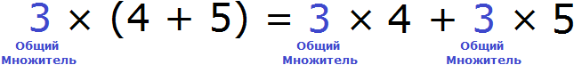
Как говорилось ранее, умножив этот общий множитель на каждое слагаемое в скобках, мы вносим его во внутрь скобок. Но возможен и обратный процесс — общий множитель можно обратно вынести за скобки. В данном случае в выражении 3 × 4 + 3 × 5 общий множитель виден как на ладони — это множитель 3. Его и нужно вынести за скобки. Для этого сначала записывается сам множитель 3
3
и рядом в скобках записывается выражение 3 × 4 + 3 × 5 но уже без общего множителя 3, поскольку он вынесен за скобки
\[3(4 + 5)\]
В результате вынесения общего множителя за скобки получается выражение 3(4 + 5). Это выражение тождественно равно предыдущему выражению 3 × 4 + 3 × 5
\[3(4 + 5) = 3 \times 4 + 3 \times 5\]
Если вычислить обе части полученного равенства, то получим тождество:
\[3(4 + 5) = 3 \times 4 + 3 \times 5\]
\[27 = 27\]
Как происходит вынесение общего множителя за скобки
Вынесение общего множителя за скобки по сути является обратной операцией внесению общего множителя во внутрь скобок.
Если при внесении общего множителя внутрь скобок, мы умножаем этот множитель на каждое слагаемое в скобках, то при вынесении этого множителя обратно за скобки, мы должны разделить каждое слагаемое в скобках на этот множитель.
В выражении 3 × 4 + 3 × 5, которое было рассмотрено выше, так и происходило. Каждое слагаемое было разделено на общий множитель 3. Произведения 3 × 4 и 3 × 5 и являются слагаемыми, поскольку если их вычислить, мы получим сумму 12 + 15
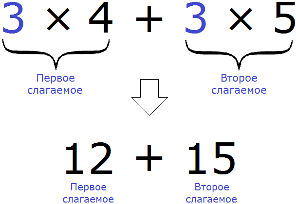
Теперь мы можем детально увидеть, как происходит вынесение общего множителя за скобки:
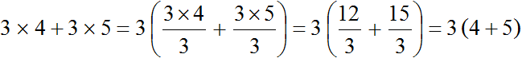
Видно, что общий множитель 3 сначала вынесен за скобки, затем в скобках происходит деление каждого слагаемого на этот общий множитель.
Деление каждого слагаемого на общий множитель можно выполнять не только разделяя числитель на знаменатель, как это было показано выше, но и сокращая эти дроби. В обоих случаях получится один и тот же результат:
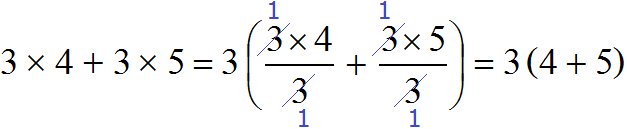
Мы рассмотрели простейший пример вынесения общего множителя за скобки, чтобы понять основной принцип.
Но не всё так просто, как кажется на первый взгляд. После того, как число умножено на каждое слагаемое в скобках, полученные результаты складывают, и общий множитель пропадает из виду.
Вернёмся к нашему примеру 3(4 + 5). Применим распределительный закон умножения, то есть умножим число 3 на каждое слагаемое в скобках и сложим полученные результаты:
\[3 \times (4 + 5) = 3 \times 4 + 3 \times 5 = 12 + 15\]
После того, как вычислена конструкция 3 × 4 + 3 × 5, мы получаем новое выражение 12 + 15. Видим, что общий множитель 3 пропал из виду. Теперь в полученном выражении 12 + 15 попробуем обратно вынести общий множитель за скобки, но чтобы вынести этот общий множитель его сначала нужно найти.
Обычно при решении задач встречаются именно такие выражения, в которых общий множитель сначала нужно найти, прежде чем его выносить.
Чтобы в выражении 12 + 15 вынести общий множитель за скобки, нужно найти наибольший общий делитель (НОД) слагаемых 12 и 15. Найденный НОД и будет общим множителем.
Итак, найдём НОД слагаемых 12 и 15. Напомним, что для нахождения НОД необходимо разложить исходные числа на простые множители, затем выписать первое разложение и убрать из него множители, которые не входят в разложение второго числа. Оставшиеся множители нужно перемножить и получить искомый НОД. Если испытываете затруднения на этом моменте, обязательно повторите этот урок.
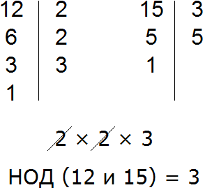
НОД слагаемых 12 и 15 это число 3. Данное число является общим множителем слагаемых 12 и 15. Его и нужно выносить за скобки. Для этого сначала записываем сам множитель 3 и рядом в скобках записываем новое выражение, в котором каждое слагаемое выражения 12 + 15 разделено на общий множитель 3
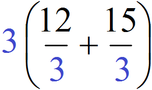
Ну и дальнейшее вычисление не составляет особого труда. Выражение в скобках легко вычисляется — двенадцать разделить на три будет четыре, а пятнадцать разделить на три будет пять:
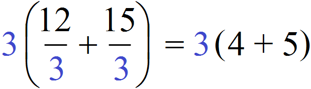
Таким образом, при вынесении общего множителя за скобки в выражении 12 + 15 получается выражение 3(4 + 5). Подробное решение выглядит следующим образом:
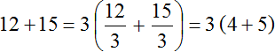
В коротком решении пропускают запись в которой показано, как каждое слагаемое разделено на общий множитель:
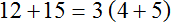
Пример 2. Вынести общий множитель за скобки в выражении 15 + 20
Наибольший общий делитель слагаемых 15 и 20 это число 5. Данное число является общим множителем слагаемых 15 и 20. Его и вынесем за скобки:
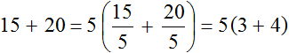
Получили выражение 5(3 + 4).
Получившееся выражение 5(3 + 4) можно проверить. Для этого достаточно умножить пятёрку на каждое слагаемое в скобках. Если мы всё сделали правильно, то должны получить выражение 15 + 20
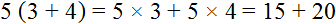
Пример 3. Вынести общий множитель за скобки в выражении 18 + 24 + 36
Найдём НОД слагаемых 18, 24 и 36. Чтобы найти НОД нескольких чисел, нужно разложить эти числа на простые множители, затем найти произведение общих множителей:
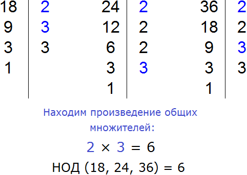
НОД слагаемых 18, 24 и 36 это число 6. Данное число является общим множителем слагаемых 18, 24 и 36. Его и вынесем за скобки:
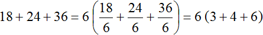
Проверим получившееся выражение. Для этого умножим число 6 на каждое слагаемое в скобках. Если мы всё сделали правильно, то должны получить выражение 18 + 24 + 36
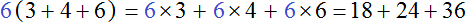
Пример 4. Вынести общий множитель за скобки в выражении 13 + 5
Слагаемые 13 и 5 являются простыми числами. Они раскладываются только на единицу и самих себя:
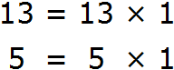
Это значит, что у слагаемых 13 и 5 нет общих множителей, кроме единицы. Соответственно, нет смысла выносить эту единицу за скобки, поскольку это ничего не даст. Покажем это:
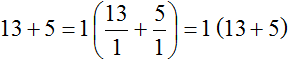
Пример 5. Вынести общий множитель за скобки в выражении 195 + 156 + 260
Найдём НОД слагаемых 195, 156 и 260
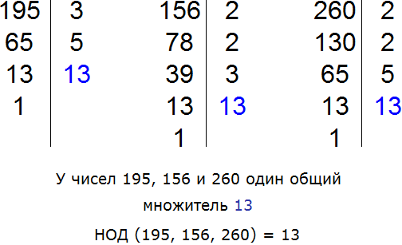
НОД слагаемых 195, 156 и 260 это число 13. Данное число является общим множителем для слагаемых 195, 156 и 260. Его и вынесем за скобки:
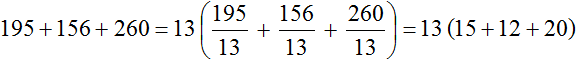
Проверим получившееся выражение. Для этого умножим 13 на каждое слагаемое в скобках. Если мы всё сделали правильно, то должны получить выражение 195 + 156 + 260
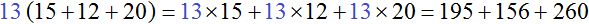
Выражение, в котором требуется вынести общий множитель за скобки, может быть не только суммой чисел, но и разностью. Например, вынесем общий множитель за скобки в выражении 16 − 12 − 4. Наибольшим общим делителем чисел 16, 12 и 4 это число 4. Данное число и вынесем за скобки:
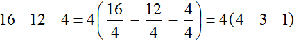
Проверим получившееся выражение. Для этого умножим четвёрку на каждое число в скобках. Если мы всё сделали правильно, то должны получить выражение 16 − 12 − 4
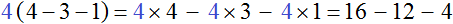
Пример 6. Вынести общий множитель за скобки в выражении 72 + 96 − 120
Найдём НОД чисел 72, 96 и 120
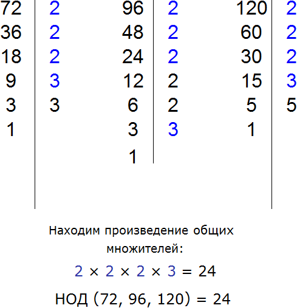
НОД для 72, 96 и 120 это число 24. Данное число является общим множителем слагаемых 195, 156 и 260. Его и вынесем за скобки:
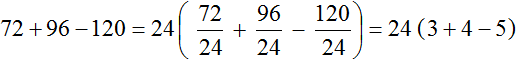
Проверим получившееся выражение. Для этого умножим 24 на каждое число в скобках. Если мы всё сделали правильно, то должны получить выражение 72+96−120
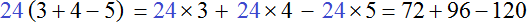
Общий множитель, выносимый за скобки, может быть и отрицательным. Например, вынесем общий множитель за скобки в выражении −6 − 3. Вынести общий множитель за скобки в таком выражении можно двумя способами. Рассмотрим каждый из них.
Способ 1.
Заменим вычитание сложением:
\[-6 + (-3)\]
Теперь находим общий множитель. Общим множителем данного выражения будет наибольший общий делитель модулей слагаемых −6 и −3.
Модуль первого слагаемого это 6. А модуль второго слагаемого это 3. НОД(6 и 3) равен 3. Данное число является общим множителем слагаемых 6 и 3. Его и вынесем за скобки:
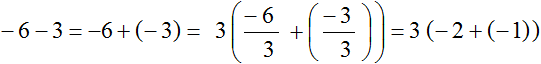
Выражение полученное таким способом получилось не очень аккуратным. Много скобок и отрицательных чисел не придают выражению простоту. Поэтому можно воспользоваться вторым способом, суть которого заключается в том, чтобы вынести за скобки не 3, а −3.
Способ 2.
Как и в прошлый раз заменяем вычитание сложением
\[-6 + (-3)\]
В этот раз мы вынесем за скобки не 3, а −3
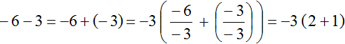
Выражение полученное в этот раз выглядит намного проще. Запишем решение покороче, чтобы сделать его ещё проще:
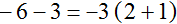
Разрешать выносить отрицательный множитель за скобки связано с тем, что разложение чисел −6 и (−3) можно записать двумя видами: сначала сделать множимое отрицательным, а множитель положительным:
\[-6 = -2 \times 3\]
\[-3 = -1 \times 3\]
во втором случае множимое можно сделать положительным, а множитель отрицательным:
\[-6 = 2 \times (-3)\]
\[-3 = 1 \times (-3)\]
А значит мы вольны выносить за скобки тот сомножитель, который захотим.
Пример 8. Вынести общий множитель за скобки в выражении −20 − 16 − 2
Заменим вычитание сложением
\[-20 - 16 - 2 = -20 + (-16) + (-2)\]
Наибольшим общим делителем слагаемых −20, −16 и −2 является число 2. Это число является общим множителем этих слагаемых. Посмотрим, как это выглядит:
\[-20 = -10 \times 2\]
\[-16 = -8 \times 2\]
\[-2 = -1 \times 2\]
Но приведенные разложения можно заменить на тождественно равные разложения. Различие будет в том, что общим множителем будет не 2, а −2
\[-20 = 10 \times (-2)\]
\[-16 = 8 \times (-2)\]
\[-2 = 1 \times (-2)\]
Поэтому для удобства за скобки можно вынести не 2, а −2
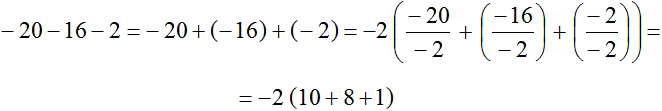
Запишем приведенное решение покороче:
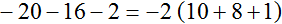
А если бы мы вынесли за скобки 2, то получилось бы не совсем аккуратное выражение:
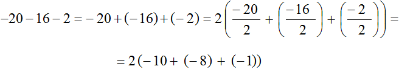
Пример 9. Вынести общий множитель за скобки в выражении −30 − 36 − 42
Заменим вычитание сложением:
\[-30 + (-36) + (-42)\]
Наибольшим общим делителем слагаемых −30, −36 и −42 это число 6. Данное число является общим множителем для этих слагаемых. Но за скобки мы вынесем не 6, а −6 поскольку числа −30, −36 и −42 можно представить так:
\[-30 = 5 \times (-6)\]
\[-36 = 6 \times (-6)\]
\[-42 = 7 \times (-6)\]
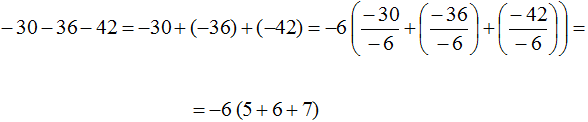
Вынесение минуса за скобки
При решении задач иногда может быть полезным вынесение минуса за скобки. Это позволяет упростить выражение и сделать его проще.
Рассмотрим следующий пример. Вынести минус за скобки в выражении −15 + (−5) + (−3)
Для наглядности заключим данное выражение в скобки, ведь речь идёт о том, чтобы вынести минус за эти скобки
\[( -15 + (-5) + (-3) )\]
Итак, чтобы вынести минус за скобки, нужно записать перед скобками минус и в скобках записать все слагаемые, но с противоположными знаками. Знаки операций (то есть плюсы) оставляем без изменений:
\[-(15 + 5 + 3)\]
Мы вынесли минус за скобки в выражении −15 + (−5) + (−3) и получили −(15 + 5 + 3). Оба выражения равны одному и тому же значению −23
\[-15 + (-5) + (-3) = -23\]
\[-(15 + 5 + 3) = -(23) = -23\]
Поэтому между выражениями −15 + (−5) + (−3) и −(15 + 5 + 3) можно поставить знак равенства, потому что они равны одному и тому же значению:
\[-15 + (-5) + (-3) = -(15 + 5 + 3)\]
\[-23 = -23\]
На самом деле при вынесении минуса за скобки опять же срабатывает распределительный закон умножения:
\[a(b + c) = ab + ac\]
Если поменять местами левую и правую часть этого тождества, то получится, что сомножитель a вынесен за скобки
\[ab + ac = a(b+c)\]
Тоже самое происходит, когда мы выносим общий множитель в других выражениях и когда выносим минус за скобки.
Очевидно, что при вынесении минуса за скобки, выносится не минус, а минус единица. Ранее мы говорили, что коэффициент 1 принято не записывать.
Поэтому и образуется перед скобками минус, а знаки слагаемых которые были в скобках меняют свой знак на противоположный, поскольку каждое слагаемое разделено на минус единицу.
Вернёмся к предыдущему примеру и детально увидим, как на самом деле выносился минус за скобки
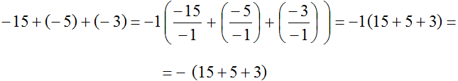
Пример 2. Вынести минус за скобки в выражении −3 + 5 + 11
Ставим минус и рядом в скобках записываем выражение −3 + 5 + 11 с противоположным знаком у каждого слагаемого:
\[-3 + 5 + 11 = -(3 - 5 - 11)\]
Как и в прошлом примере, здесь за скобки вынесен не минус, а минус единица. Подробное решение выглядит следующим образом:
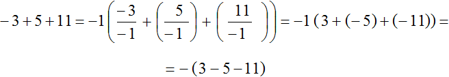
Сначала получилось выражение −1(3 + (−5) + (−11)), но мы раскрыли в нём внутренние скобки и получили выражение −(3 − 5 − 11). Раскрытие скобок это тема следующего урока, поэтому если данный пример вызывает у вас затруднения, можете пока пропустить его.
Вынесение общего множителя за скобки в буквенном выражении
Выносить общий множитель за скобки в буквенном выражении намного интереснее.
Для начала рассмотрим простейший пример. Пусть имеется выражение 3a + 2a. Вынесем общий множитель за скобки.
В данном случае, общий множитель виден невооруженным глазом — это множитель a. Его и вынесем за скобки. Для этого записываем сам множитель a и рядом в скобках записываем выражение 3a + 2a, но уже без множителя a поскольку он вынесен за скобки:
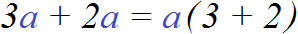
Как и в случае с числовым выражением, здесь происходит деление каждого слагаемого на вынесенный общий множитель. Выглядит это так:
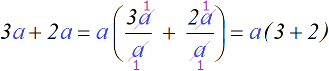
В обеих дробях переменные a были сокращены на a. Вместо них в числителе и в знаменателе получились единицы. Единицы получились по причине того, что вместо переменной a может стоять любое число. Эта переменная располагалась и в числителе и в знаменателе. А если в числителе и в знаменателе располагаются одинаковые числа, то наибольший общий делитель для них будет само это число.
Например, если вместо переменной a подставить число 4, то конструкция
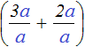
примет следующий вид: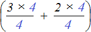
. Тогда четвёрки в обеих дробях можно будет сократить на 4: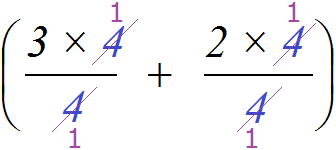
Получается то же самое, что и раньше, когда вместо четвёрок стояла переменная a.
Поэтому не следует пугаться при виде сокращения переменных. Переменная это полноправный множитель, пусть даже выраженный буквой. Такой множитель можно выносить за скобки, сокращать и выполнять другие действия, которые допустимы к обычным числам.
Буквенное выражение содержит не только числа, но и буквы (переменные). Поэтому общий множитель, который выносится за скобки часто бывает буквенным множителем, состоящим из числа и буквы (коэффициента и переменной). К примеру, следующие выражения являются буквенными множителями:
3a, 6b, 7ab, a, b, c
Прежде чем выносить такой множитель за скобки, нужно определиться, какое число будет в числовой части общего множителя и какая переменная будет в буквенной части общего множителя. Другими словами, нужно узнать какой коэффициент будет у общего множителя и какая переменная будет в него входить.
Рассмотрим выражение 10a + 15a. Попробуем вынести в нём общий множитель за скобки. Сначала определимся из чего будет состоять общий множитель, то есть узнаем его коэффициент и какая переменная будет в него входить.
Коэффициентом общего множителя должен быть наибольший общий делитель коэффициентов буквенного выражения 10a + 15a. Коэффициентами данного выражения являются числа 10 и 15, а их наибольший общий делитель это число 5. Значит число 5 будет коэффициентом общего множителя, выносимого за скобки.
Теперь определимся какая переменная будет входить в общий множитель. Для этого нужно посмотреть на выражение 10a + 15a и найти буквенный сомножитель, который входит во все слагаемые. В данном случае, это сомножитель a. Этот сомножитель входит в каждое слагаемое выражения 10a + 15a. Значит переменная a будет входить в буквенную часть общего множителя, выносимого за скобки:
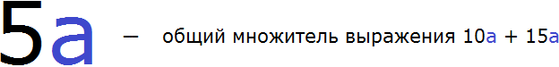
Теперь осталось вынести общий множитель 5a за скобки. Для этого разделим каждое слагаемое выражения 10a + 15a на 5a. Для наглядности коэффициенты и числа будем отделять знаком умножения (×)
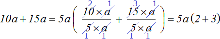
Проверим получившееся выражение. Для этого умножим 5a на каждое слагаемое в скобках. Если мы всё сделали правильно, то получим выражение 10a + 15a
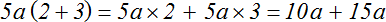
Буквенный множитель не всегда можно вынести за скобки. Иногда общий множитель состоит только из числа, поскольку ничего подходящего для буквенной части в выражении не находится.
Например, вынесем общий множитель за скобки в выражении 2a − 2b. Здесь общим множителем будет только число 2, а среди буквенных сомножителей общих множителей в выражении нет. Поэтому в данном случае будет вынесен только множитель 2
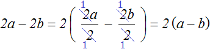
Пример 2. Вынести общий множитель выражении 3x + 9y + 12
Коэффициентами данного выражения являются числа 3, 9 и 12, их НОД равен 3. Значит коэффициентом общего множителя, выносимого за скобки, будет число 3. А среди буквенных сомножителей (переменных) нет общего множителя. Поэтому окончательный общий множитель это 3
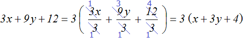
Пример 3. Вынести общий множитель за скобки в выражении 8x + 6y + 4z + 10 + 2
Коэффициентами данного выражения являются числа 8, 6, 4, 10 и 2, их НОД равен 2. Значит коэффициентом общего множителя, выносимого за скобки, будет число 2. А среди буквенных сомножителей нет общего множителя. Поэтому окончательный общий множитель это 2
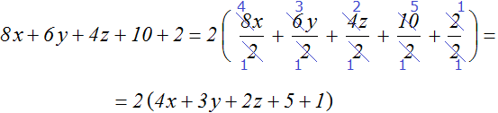
Пример 4. Вынести общий множитель 6ab + 18ab + 3abc
Коэффициентами данного выражения являются числа 6, 18 и 3, их НОД равен 3. Значит коэффициентом общего множителя, выносимого за скобки, будет число 3. В буквенную часть общего множителя будут входить переменные a и b, поскольку в выражении 6ab + 18ab + 3abc эти две переменные входят в каждое слагаемое. Поэтому окончательный общий множитель это 3ab
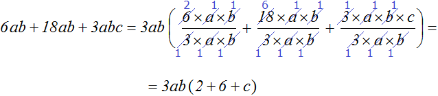
При подробном решении выражение становится громоздким и даже непонятным. В данном примере это более чем заметно. Это связано с тем, что мы сокращаем множители в числителе и в знаменателе. Лучше всего делать это в уме и сразу записывать результаты деления. Тогда выражение станет коротким и аккуратным:
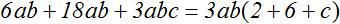
Как и в случае с числовым выражением в буквенном выражении общий множитель может быть и отрицательным.
Например, вынесем общий множитель за скобки в выражении −3a − 2a.
Для удобства заменим вычитание сложением
\[-3a - 2a = -3a + (-2a)\]
Общим множителем в данном выражении является множитель a. Но за скобки можно вынести не только a, но и −a. Его и вынесем за скобки:
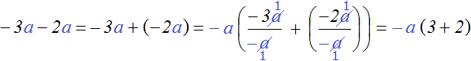
Получилось аккуратное выражение −a(3+2). Не следует забывать, что множитель −a на самом деле выглядел как −1a и после сокращения в обеих дробях переменных a, в знаменателях остались минус единицы. Поэтому в итоге и получаются положительные ответы в скобках
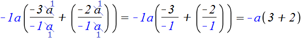
Пример 6. Вынести общий множитель за скобки в выражении −6x − 6y
Заменим вычитание сложением
\[-6x-6y = -6x+(-6y)\]
Вынесем за скобки −6
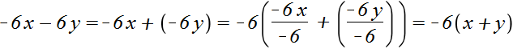
Запишем решение покороче:
\[-6x - 6y = -6(x + y)\]
Пример 7. Вынести общий множитель за скобки в выражении −2a − 4b − 6c
Заменим вычитание сложением
\[-2a-4b-6c = -2a + (-4b) + (-6c)\]
Вынесем за скобки −2
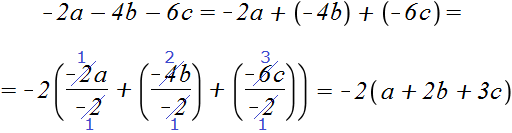
Запишем решение покороче:
\[-2a - 4b - 6c = -2(a + 2b + 3c)\]
Вынесение общего множителя за скобки это очень важная тема. В данном уроке рассмотрены только азы и простейшие примеры. Мы ещё вернемся к этой теме, когда будем изучать многочлены.
Обязательно изучите данный урок, поскольку при изучении многочленов потребуется выносить за скобки сложный множитель, состоящий из степеней.
Задания для самостоятельного решения
Показать решение
Показать решение
Показать решение
Показать решение
Показать решение
Показать решение
Показать решение
Показать решение
Показать решение
Показать решение
Показать решение
Показать решение
Показать решение
Показать решение
Показать решение
Показать решение
Показать решение
Показать решение
Показать решение
Показать решение
Возникло желание поддержать проект?
Используй кнопку ниже